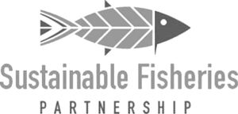

Trade Mark Journal No.2025/039 26 September 2025
WO0000001875209 (9,35,41,42,45)
Office of origin: United States of America
Date of International Registration:13 December 2024
Date of designation in the UK:
13 December 2024

The mark consists of the stylized image of a fish centered above the words "Sustainable Fisheries" in initial caps with the word "Partnership" below in all caps.
"PARTNERSHIP"
- Class 9
- Downloadable electronic publications in the nature of reports, charts, training materials, guides, work plans, specifications, implementation plans, operational guidance, and curriculum in the fields of seafood supply chains and fishery and aquaculture sustainability; downloadable templates for drafting whitepapers, improvement plans, workplans, budgets, agreements, and reports in the fields of seafood supply chains and fishery and aquaculture sustainability.
- Class 35
- Promoting collaboration within industry groups, multinational and conservation organizations, and national governments to make improvements in the fields of seafood supply chains and fishery and aquaculture sustainability; promoting public awareness of the need for environmental conservation and preservation of the oceans, marine life, and associated ecosystems; providing business, commercial, and consumer information in the fields of seafood supply chains and fishery and aquaculture sustainability via a web site; providing business, commercial, and consumer information in the fields of seafood supply chains and fishery and aquaculture sustainability; providing independent ratings of the status of fish stocks, fisheries, and aquaculture zones to businesses in the seafood industry for purposes of improving sustainability; providing business, commercial, and consumer information in the fields of seafood supply chains and fishery and aquaculture sustainability from computer databases; business consulting in the fields of seafood supply chains and fishery and aquaculture sustainability.
- Class 41
- Providing online newsletters in the fields of seafood supply chains and fishery and aquaculture sustainability via e-mail; educational services, namely, organizing company trainings, conducting industry roundtables, and hosting in-person forums in the fields of seafood supply chains and fishery and aquaculture sustainability; teaching and training in the fields of seafood supply chains and fishery and aquaculture sustainability; providing educational information in the academic fields of seafood supply chains and fishery and aquaculture sustainability for the purpose of academic study via a web site; providing educational information in the academic fields of seafood supply chains and fishery and aquaculture sustainability for the purpose of academic study.
- Class 42
- Scientific research and analysis in the fields of seafood supply chains and fishery and aquaculture sustainability; scientific and technological services and research and design relating thereto, namely, scientific research, analysis, and design in the fields of seafood supply chains and fishery and aquaculture sustainability; scientific research, namely, technical project study and development of action plans for environmental conservation and preservation of the oceans, marine life, and associated ecosystems; providing scientific information in the fields of seafood supply chains and fishery and aquaculture sustainability via a web site; providing scientific information in the fields of seafood supply chains and fishery and aquaculture sustainability; providing scientific information in the fields of seafood supply chains and fishery and aquaculture sustainability from computer databases; providing technical information in the fields of marine life bio-diversity and environmental assessment and planning related to fishery and aquaculture sustainability via a web site; providing technical information in the fields of marine life bio-diversity and environmental assessment and planning related to fishery and aquaculture sustainability; providing technical information in the fields of marine life bio-diversity and environmental assessment and planning related to fishery and aquaculture sustainability from computer databases; providing scientific information in the field of environmental conservation and preservation relating to seafood supply chains and fishery and aquaculture sustainability via a web site; providing scientific information in the field of environmental conservation and preservation relating to seafood supply chains and fishery and aquaculture sustainability; providing scientific information in the field of natural resource management via a web site; providing scientific information in the field of natural resource management; providing scientific research information in the field of natural resource management from a computer database.
- Class 45
- Providing legal information relating to public policy in the fields of fishery and aquaculture environmental sustainability and marine life conservation and preservation via a website; providing legal information relating to public policy in the fields of fishery and aquaculture environmental sustainability and marine life conservation and preservation; providing legal information relating to public policy in the fields of fishery and aquaculture environmental sustainability and marine life conservation and preservation from a computer database; providing information in the field of environmental regulatory matters related to fishery and aquaculture sustainability via a web site; providing information in the field of environmental regulatory matters related to fishery and aquaculture sustainability; providing information in the field of environmental regulatory matters related to fishery and aquaculture sustainability from computer databases.
Sustainable Fisheries Partnership Foundation
Representative: Rebecca Dalton Covington & Burling LLP, One CityCenter, 850 Tenth Street NW, Washington DC 20001, UNITED STATES OF AMERICA